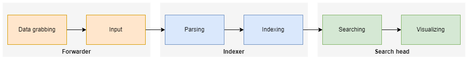

MON 2.1 - Splunk
- MON
- 2022-2023
- temps 2
- cybersecurité
- logs
- big data
- Kasimir Romer
Introduction
Splunk est un logiciel de gestion des logs. Il permet de collecter, indexer et rechercher des logs. Il permet aussi de visualiser les logs sous forme de graphiques. Dans la domaine de la sécurité informatique, Splunk est souvent utilisé comme SIEM (Security Incident Event Management) car il permet de rechercher des patterns dans les logs et d'alerter sur des événements. Un SIEM est la base et le logiciel central de chaque SOC (Security Operations Center). Splunk est aussi utilisé dans d'autres domaines, par exemple pour la business intelligence, car il permet de collecter et d'analyser des données de différents systèmes.
A partir d'ici, la langue de la formation est l'anglais parce que tous les tutoriels et la documentation sont en anglais et la langue universelle de la domaine cybersec est l'anglais également.
Prerequisites
To follow the tutorials and documentation, it is recommended to follow along in a local installation of Splunk Enterprise. To do this, you need to:
- Creation of a Splunk Account
- Installation of Splunk Enterprise (https://www.splunk.com/en_us/download/splunk-enterprise.html)
Formation
The basic training "Splunk Fundamentals" should take about 10-12 hours, so the volume would be very well adapted to this MON.
Nomenclature
When we talk about Splunk, we usually mean Splunk Enterprise, which is the commercial version of the main Splunk product, or the newer Splunk Cloud, which does basically the same job, but is not installed in a datacenter. Instead, it uses a cloud environment that allows to be more flexible. Splunk is the name of the software company that creates those programs, but because those programs are so central to the Splunk univers, they are often referred to as Splunk. Splunk Enterprise Security is a module of Splunk Enterprise that adds SIEM (Security Incident Event Management) capabilities to Splunk Enterprise.
What does Splunk do?
Splunk basically takes data from any source, parses it and adds it to an index, which later can be searched to retrieve the data. Splunk has powerful capabilities to use the retrieved data to visualize it and monitor it. It can also be used to alert on certain events. The software is especially powerful when it comes to handling big amounts of data, because it can handle millions of events per second and easily ingest giga- to terabytes of data.
Atomic data is called event in Splunk, so a search returns a list of events. An event is a set of values associated with a timestamp. It is a single entry of data and can have one or multiple lines. An event can be a text document, a configuration file, an entire stack trace, and so on. Due to Splunks distributed architecture, it can be used to collect data from multiple sources and multiple locations efficently.
Splunk Architecture
Splunk consists of three main components: Search Head, Indexer and Forwarder.
Search Head
The search head is the user interface, it is the place where you search the index(es) and visualize the data. The search query is inserted into the search bar and consists of the index to be searched, the time range and the specific search string. The search string can be a simple search string or a SPL (Splunk Query Language) query. The search string is then sent to the indexer(s) and the results are displayed in the search head. There, they can be filtered, sorted and visualized.
Indexer
The indexer takes the raw data that it gets from the forwarder(s) and indexes it. The indexer is the place where the data is converted into events and stored. During this process, it can perform operations on the data like masking sensitive information.
Forwarder
The forwarder is the component that collects the data from the sources and sends it to the indexer. At every data source, a forwarder must be installed to grab the data, e.g. on every Windows Host, a forwarder must run to forward Windows Event Logs to the indexer. An alternative to the traditional forwarder is the HTTP Event Collector (HEC), which can be used to send data to the indexer via HTTP(S). The data the forwarder can retrieve can be configured in the forwarder's configuration file. The sources are, among others, Windows Event Logs, Linux Syslogs, Apache Logs, data from SQL databases, AWS or other cloud logs, APIs etc.
Data Pipeline
The data flow in Splunk can be described like this: 
Other Components
Deployment server
The deployment server is a central instance that can be used to push configuration to the forwarders. It is not necessary to use a deployment server, but it can be very useful to manage the configuration of the forwarders, especially in large environments. Normally, there is only one deployment server in the whole environment.
License Master
The license master is a Splunk instance that is responsible for managing and enforcing the use of licenses in a Splunk deployment. It is used to track and manage the usage of Splunk across the organization, including the amount of data ingested, the number of users, and the number of Splunk instances. This is especially useful in large environments, where it is important, and at the same time very difficult, to keep track of the usage of Splunk.
Integrations (Apps)
Splunk can be connected with many different systems through proprietary connectors or an API to combine the power of Splunk indexing and searching with many different softwares. In Splunk, those connectors are called apps and can be obtained from Splunkbase. There are many apps available for free, but some are only available for purchase. The apps can be installed on the search head, the indexer or the forwarder. Some of the popular apps are connectors for Micrsoft Windows, Microsoft Azure, Amazon Web Services, Cisco, Palo Alto Networks, VMware, Salesforce etc.
Searching
For most users, searching the Splunk indexes are the only thing they do with Splunk, so it is very important to understand how searching works in Splunk.
Search Processing Language (SPL)
Search Processing Language is the primary language used to search, analyze, and visualize data in Splunk. SPL is a proprietary language that is specific to Splunk. Some of the key features of SPL include the ability to search and filter data, perform calculations and transformations on data, and create custom visualizations.
SPL uses commands and functions to interact with the search results. Commands like chart, eval, stats, timechart, top, where and fields are used to filter the data that is piped into the command. Functions like lower, upper, replace, strcat or strcat are used to manipulate the data returned by the search. A short, but very comprehensive, list of SPL commands and functions can be found in the cheat sheet.
Every SPL query must include at least one index to be searched. The index can be specified by name or by wildcard. If no index is specified, the default index is used which is defined in the configuration of the search head. Commands are chained together with a pipe “|” character to indicate that the output of one command feeds into the next command on the right, just like in Bash in Linux.
Examples of SPL queries:
index=* | head 10
# This query will search for all events in all indexes and return the first 10 results.
index=web* status=404 | top referrer
# This query will search for events in indexes that start with "web" and have a status field with a value of 404. It will then return the top referrers for these events.
index=web* | timechart count by status
# This query will search for events in indexes that start with "web" and create a timechart showing the count of events by status.
index=web* status=404 | geostats count by clientip
# This query will search for events in indexes that start with "web" and have a status field with a value of 404. It will then use the geostats command to calculate statistics for the count of events by client IP address and display the results on a map.
Time ranges
The search results can also be filtered by time ranges. There are two types of time ranges: absolute and relative. Absolute time ranges are specified by a start and end time, e.g. 2019-01-01 00:00:00 to 2019-01-01 23:59:59. Relative time ranges are specified by a start and end time relative to the current time, e.g. -1d@d to @d (yesterday to today). Besides this notation, the time ranges can also be specified by a time range picker in the search bar.
Sources
Tutorials
- https://education.splunk.com/free
- https://www.splunk.com/pdfs/training/splunk-education-student-handbook.pdf
- https://www.youtube.com/watch?v=6lX4DOd1T-s
- https://youtube.com/playlist?list=PLSr58-DJdRybowRyR8gp4cbLtoQektcze
- https://www.splunk.com/en_us/training/free-courses.html
- Splunk Search Tutorial: https://docs.splunk.com/Documentation/Splunk/9.0.3/SearchTutorial/WelcometotheSearchTutorial
Documentation
- Official documentation: https://docs.splunk.com/Documentation/Splunk/9.0.3/
- Great cheat sheet: https://www.splunk.com/pdfs/solution-guides/splunk-quick-reference-guide.pdf